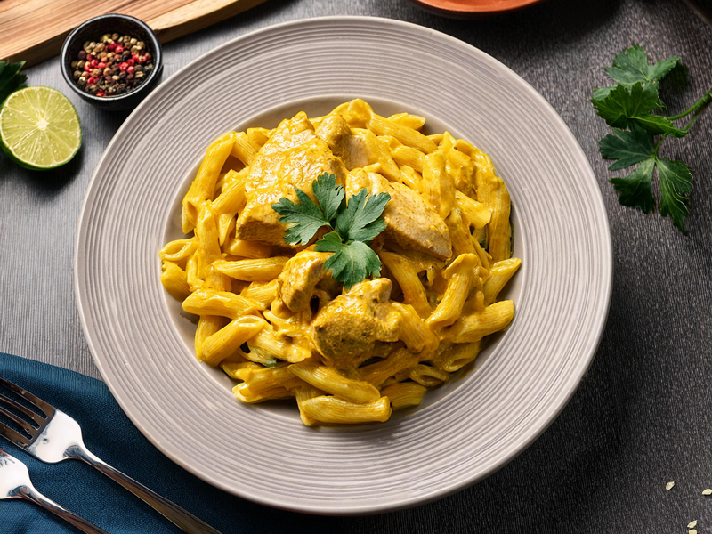

Uendelig Kylling og karrygryde
En klassisk lækker kylling og karry gryde til pasta eller ris. For at spare penge kan man blive ved med at genbruge rester fra gryden og bare putte mere kokosmælk/tomater/vand/melblanding i hver gang. Selvfølgelig kommer der et punkt hvor man kan supplere med kylling/grøntsager igen. Det er helt sikkert en ret der tillader freestyling med ingredienser, og der kan sagtens tilføjes alt muligt, som for eksempel frosne grøntsager, majs, krydderier osv.
Sådan gør du
- Steg kylling sammen med karrypaste med lidt olie og evt. løg og hvidløg.
- tilføj kokosmælk og tomatdåse og gerne hvad end krydderier du har lyst
- lad retten simmre for 20 minutes.
- kog pasta i denne tid
- hvis sovsen er for tynd kan du tilsætte en melblanding, husk da at koge det op i lidt tid
- Season with salt and pepper, and garnish with fresh coriander.
- Tilføj sovsen til pastaen og bland

Ingredients
- 400g chicken breast, diced
- gul karrypaste
- 1 løg, (eller bare løgpulver)
- 2 hvidløg (eller hvidløgspulver)
- 3 spiseskeer karrymadras
- 400ml kokos mælk
- 1 dåse tomater
- tilføj vand + hvedemel blanding for tykkere sovs
- Salt and pepper to taste